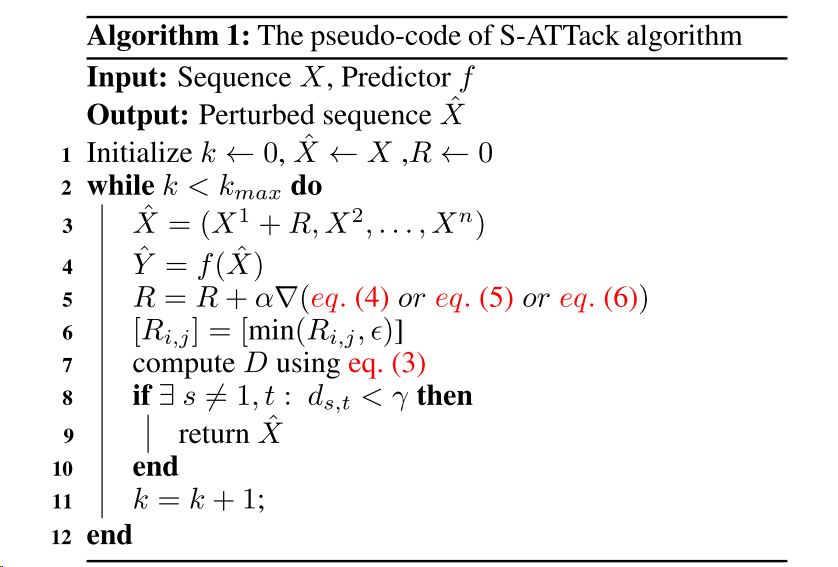
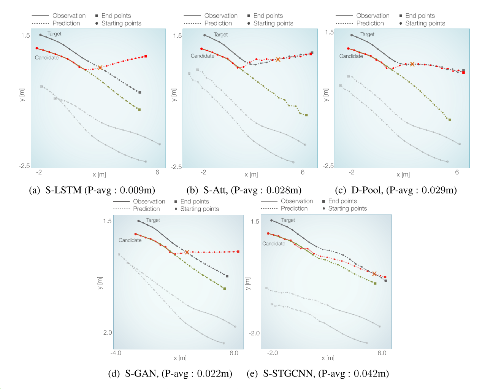

Are socially-aware trajectory prediction models really socially-aware
0 摘要
我们的交通领域最近见证了一场基于神经网络的轨迹预测器的军备竞赛。虽然这些预测器是许多应用的核心，如自主导航或行人流模拟，但它们的对抗鲁棒性尚未得到仔细研究。在本文中，我们介绍了一个社会参与的攻击，以评估社会的理解预测模型的碰撞避免。攻击是一种小而精心设计的干扰，以使预测器失败。从技术上讲，我们将碰撞定义为输出的失败模式，并提出硬和软注意机制来指导我们的攻击。由于我们的攻击，我们揭示了当前模型在社会理解方面的局限性。我们证明了我们的方法在最近的轨迹预测模型的优势。最后，我们证明了我们的攻击可以用来增加社会对最先进模型的理解。
1 结论
在这项工作中，我们研究了在对抗性攻击下的社会理解方面的轨迹预测模型的鲁棒性。我们引入了我们的社会性攻击（S-ATTack），以在最先进的预测模型中引起具有小扰动的碰撞。使用S-ATTack进行对抗性训练不仅可以使模型对对抗性攻击更具鲁棒性，还可以降低碰撞率，从而提高其社会理解能力。本文揭示了轨迹预测模型的共同弱点，为他们的社会理解打开了一扇窗户。
我们的工作是第一步，突出了模型中缺乏社会理解。攻击方法可以通过考虑碰撞发生的速度或考虑社会行为的其他概念（如grouping）来扩展。为了接近社会意识的预测，我们认为，该领域缺乏两个主要组成部分。首先，使用更多与社会相关的指标，而不是ADE/FDE进行培训和评估。这是一个研究领域，需要更多地研究碰撞时间度量[24]等度量。其次，在缺乏适当归纳偏差的情况下，监督学习在没有适当的归纳偏见的情况下无法正确学习社会行为，特别是在当前的小规模数据集上。解决这一挑战的一个方向是联合基于物理的模型和神经网络相结合。此外，拥有更具挑战性和大规模的数据集可以帮助模型自己学习偏差。
2 介绍
理解人类的社会行为是许多运输应用中的核心问题，这些应用的范围从自主导航（例如，社交/交付机器人[10]或自动驾驶车辆[13，5]），微观行人流模拟[42，40]。对于机器人在人群中安全导航或自动驾驶汽车在城市地区无害驾驶，人类行为预测是必不可少的。特别是，与人类打交道使问题的安全至关重要。例如，自动驾驶汽车在人行横道上的错误预测可能会危及行人的生命。作为一个安全关键问题，需要仔细评估轨迹预测方法，以减轻与人类相关的风险。因此，这些方法的鲁棒性，作为一个重要的评估方面，应该仔细研究。
行人轨迹预测问题是以行人过去的位置作为输入，预测行人未来的位置。这个问题已经得到了解决方案的基础上微观人体模拟模型[12，18]。最近，提出了各种基于神经网络的方法。提出了基于长短期记忆网络[1]，卷积神经网络[36]和生成对抗网络（GAN）[21]的各种模型。这个问题的主要挑战在于学习人与人之间的互动。因此，基于社会感知神经网络的模型被设计为更准确地处理交互[1，47，26，34]。人类的互动涉及不同的社会行为，如避免碰撞，在一个群体中行走，从不同的方向合并到一个特定的点。在所有行为中，碰撞避免，即，人们选择一条避免与他人碰撞的道路，是很少违反的关键行为之一。这就是为什么许多以前的作品认为尊重避碰作为他们的模型是社会的证据[34，26，27]。同样，我们认为避撞作为一个指标的社会行为的模型。
我们在图1中展示了一个概念上合理的真实场景。给定所观察到的人类在场景中的轨迹，社会预测器合理地预测未来的位置，而不会发生冲突。然而，通过向观察轨迹添加小于5cm的小扰动，出乎意料地，发生了代理预测之间的冲突，这表明预测者的不完整的社会理解。图中的轨迹来自S-LSTM [1]。
图一：给定场景中智能体的观察轨迹，预测器（这里是S-LSTM [1]）合理地预测未来的位置（蓝线）。然而，如果观测轨道（红色）中的扰动小于5厘米，则预测会发生不可接受的碰撞。
在这项工作中，与为分类器设计的常见对抗性攻击[37，44]相比，我们为轨迹预测问题设计了攻击，这是一个多模态回归任务。我们使用对抗性的例子来研究轨迹预测模型的避碰行为。更具体地说，我们研究了在输入的小扰动下预测模型的最坏情况下的社会行为。本研究有两个主要动机：（1）它是一个评估方法。我们的方法带来了反例，其中模型在具有社会行为方面失败，即，它不能避免碰撞。(2)利用对抗性示例，可以训练具有更好的碰撞避免的模型。此外，我们的研究突出了在现实世界中的应用，采用这种模型的实际问题。此外，我们的研究突出了在现实世界中的应用，采用这种模型的实际问题。值得注意的是，国家的最先进的定位算法给予平均超过0.2米的错误，在每个帧的人体位置检测[17，11]。虽然我们的工作重点是在对抗环境下的模型故障，它激励进一步研究模型的性能时，定位算法的误差分布的关注。
我们提出了一种对抗性攻击，通过在两个代理的预测轨迹之间造成碰撞来欺骗/失败轨迹预测模型。也就是说，对抗性攻击的目的是找到导致碰撞的小扰动。碰撞可以假设发生在任何两个代理之间，并在任何预测时间步。然而，从攻击算法的角度来看，代理和时间步长的选择影响最终扰动的大小显着。为了解决这个问题，我们引入了一种注意力引导的对抗攻击，称为社交攻击（S-ATTack），它可以学习最佳碰撞点。我们提出了我们的攻击的两种变体：硬注意和软注意。我们的实验表明，我们的新攻击可以找到使最先进的轨迹预测模型生成错误预测的扰动，从而导致小扰动的碰撞。我们表明，实现一个预测的扰动可以转移到其他预测揭示模型之间的共同弱点。此外，我们证明了模型过度依赖于最后的观察点，这使得模型容易受到攻击。最后，我们引入了一个对抗性训练方案，使轨迹预测模型更加鲁棒。特别是，我们展示了我们的方法如何提高模型在避免碰撞方面的社会理解。据我们所知，这是解决轨迹预测模型的对抗脆弱性和鲁棒性的第一项工作。我们的主要贡献总结如下：
1我们引入S-ATTack来评估社会对最先进的轨迹预测模型的理解。
2我们的实验从不同方面揭示了预测模型的弱点。
3我们演示了如何使用我们的SATack来提高预测器的鲁棒性。
3 相关工作
人体轨迹预测。社会力模型[22]是一种主要的手工制作方法，用于捕捉人类的社会行为。他们通过由排斥力和吸引力决定的社会场来模拟行人之间的相互作用。社会互动已经从其他角度解决，如离散选择模型[4]和元胞自动机模型[14，48]。虽然所有这些手工制作的方法都具有很好的可解释性，并且不需要大量数据，但事实证明，它们无法有效地对长期依赖关系或复杂的交互进行建模[2]。
Social-LSTM [1]是第一个提出使用数据驱动的神经网络而不是手工制作的函数来学习场景中代理之间的交互动态的工作。在[27，7，23，1]中研究了不同类型的汇集社会特征，以共享代理的特征，从而导致社会一致性的预测。卷积神经网络被研究来处理共用的特征在一个场景的一个代理上。为了更好地检测每个代理的相对重要性，在[47]中使用了注意力网络。最近，许多作品利用图神经网络来建模代理之间的关系[26，29，49，34]。数据的多模态分布是通过使用生成对抗网络来学习的[21，41，3]。虽然所有提到的工作都提高了平均和最终位移误差的性能，但它们偶尔会输出不可接受的解决方案（例如，碰撞）。在这项工作中，我们攻击了最先进的基于深度学习的最新模型，并揭示了它们对挑战其社会行为的小扰动的弱点。
前面提到的工作试图通过观察人类数据来学习社会行为，其中隐含着避免碰撞。也有明确教导模型避免碰撞的工作。虽然这些工作中的大多数都解决了计划问题[50，16]，但有些采用了反向强化学习框架来引导网络走向无碰撞轨迹[46]。在这项工作中，我们将重点放在基于深度学习的轨迹预测器上，这些预测器完全由数据驱动，不利用人类指导。
对抗性攻击。对抗性攻击在[44]中首次引入，展示了深度图像分类器对不可感知但精心制作的扰动的脆弱性。形式上，对抗扰动被定义为改变给定分类器f的输出的最小扰动R：
添加这些以BFP范数为界的不可感知的扰动可以很容易地欺骗图像分类器[20，35，43]。根据“人类视觉知识”，对图像添加不可感知的扰动不会改变其类别标签。因此，一个好的模型应该在将这些扰动添加到其输入的同时保持其预测。
对抗性攻击也被推广到评估模型对其他领域（如自然语言处理[51，9]和表格数据[6]）扰动的脆弱性。然而，据我们所知，对抗性攻击尚未在人类轨迹预测的背景下进行探索。人的轨迹是一个时间轨迹，因此可以看作是时间序列数据预测。在[19，25，30]中研究了不同类型的时间序列数据的分类问题。虽然他们的重点是分类任务，但我们的目标是回归任务，这使得错误输出的定义具有挑战性。此外，在人类轨迹序列中，扰动的不可感知性不是主要兴趣，因为在这里，人类知识是尊重所有场景中的社会行为（避免碰撞）。最后，一个具体的挑战，我们的问题是在碰撞点的选择，影响扰动大小的自由。我们通过提出的S-ATTack方法来解决这些挑战。
4 方法
4.1 框架
4.1.1 人物轨迹预测
行人轨迹预测解决了以序列作为输入和输出的回归任务。在任何时间步t，第i个人/代理由他/她的xy坐标（Xi t，yi t）表示。我们将每个智能体对Tobs时间步的观察序列表示为Xi，这是一个Tobs × 2矩阵，场景中所有n个智能体的观察序列表示为X =（X1，...，Xn）。给定X，轨迹预测器f预测所有智能体Y =（Y1，...，Yn）= f（X1，...，Xn），其中Yi是Tobs × 2矩阵。
4.1.2 Adversarial examples for trajectory prediction
利用3.1.1节中介绍的符号，我们将为轨迹预测提供对抗例子的定义。为了不失一般性，本文假设在agent中任意选择的候选agent中加入扰动R。注意，在实验中，所有的agent都被逐个视为候选agent。Xˆ1 = X1 + R，而其他agent(我们称之为邻居){Xj}j=1的观测值保持不变。因此，R为对抗性扰动Tobs×2矩阵。对抗性实例为ˆX = (X1+R,X2，…，Xn)，该实例预测器的输出为ˆY =(ˆY1，…，ˆYn) = f(ˆX)。式中，给定一个小常数> 0，一个碰撞距离阈值γ和一个矩阵·max的所有行范数的最大值，可得一个社会参与对抗的例子:
换句话说，这类对抗性例子是基于扰动一个观测轨迹，使f在一个时间步t中预测两个agent j和1之间至少有一次碰撞(距离小于γ)。此外，为了不失去一般性，我们关注候选agent和相邻agent之间的碰撞。显然，它可以直接扩展到任意两个代理之间的碰撞。在下一节中，我们将描述如何使用社会参与攻击获得R。
4.2 社会参与的攻击S-attack
我们提出了三个基于不同注意机制的优化问题来寻找碰撞的合适扰动。优化问题分别在3.2.1、3.2.2和3.2.3节中进行说明，并采用3.3节中所述的基于投影梯度下降的迭代算法进行求解。
在介绍这三种优化之前，我们将解释在所有三种优化中使用的距离矩阵。给定扰动R和模型f，我们定义距离矩阵
因此，对于特定的R，可以利用距离矩阵D(R)来指示是否发生了碰撞。我们现在解释三种方法来找到这样的扰动，通过优化不同的代价函数依赖于D(R)。
4.2.1 no-attention loss
我们的第一个尝试是引入一个简单的社会损失，以发现在轨迹预测序列中造成碰撞的扰动。为了实现这一目标，我们在预测模型中发现了使人类预测之间发生碰撞的扰动。一种简单的解决方案是最小化候选代理与其邻居在所有预测时间步中的距离和:
这种朴素方案对所有主体给予同样的关注，这可能无法有效地获得小扰动。例如，远端代理可能不是碰撞的潜在候选对象，因此应该较少关注。
所以有了hard，只关注离自己最近的。
4.2.2 hard-attention loss
造成冲突的更好方法是在特定的时间步中针对特定的代理，而不是对所有相邻代理取平均。然后，攻击模型的方式是在相应的时间步长内减小被选择agent与候选agent之间的距离，直到发生碰撞。硬注意攻击的方程如下:

这个就是添加了WT，说白了就是寻找最近的人（代理）进行碰撞。
其中δ是克罗内克δ函数（异或函数）。此外，W是注意力权重矩阵，并且wj，t是在预测时间步的时间步t处代理j的注意力权重。实际上，作为最接近的代理时间步长就是目标代理wk，m的关联权重是1，而其他权重是0。社会关注损失是D（R）乘以W的转置加上具有平衡系数λr的扰动的正则化的迹（Tr），该平衡系数λr鼓励找到小扰动序列以进行碰撞。
4.2.3 soft-attention loss
EQ的主要缺点。(5)碰撞的目标点（k，m）是基于攻击最近的代理时间步长需要足够小的扰动的假设来选择的。这限制了目标点的选择，并且可能找不到最佳目标点。请注意，模型是非线性的，与最近的代理时间步长的碰撞可能不需要最小的扰动。为了解决这个问题，我们让攻击自己关注最佳目标。我们引入了一个软注意力机制，在该机制中，与每个代理时间步相关联的权重由攻击分配，以实现更小的扰动。软注意力攻击的公式如下：
soft不是寻找最近的，而是最有可能的。
去除了异或函数，并且添加了tanh函数，减少对远处的agent的attention。
我们通过减去W乘以标量λw的Frobenius范数（矩阵元素的平方和的平方根）来阻止权重的一致性。W初始化为均匀分布。它是逐步更新的，并把更多的权重给更可能的目标，使碰撞。在收敛点附近，最佳目标代理接收接近1的权重值，而其余代理接收0。注意，W和R是针对每个输入样本联合优化的。我们在补充材料中展示了W在训练中如何变化的一个例子。我们将比较我们的社会对抗攻击（硬注意力eq。(5)和软注意力EQ。(6))第4.3节。为了简洁起见，在本文的其余部分，我们用S-ATTack来指代软注意力攻击。
4.3 S-attack 算法
eq4 5 6 分别对应no hard soft attention的公式。
eq3计算距离。

5 实验
5.1 实验设置
ETH [38]，UCY [28]和WildTrack [15]：这些都是在世界坐标中具有人类位置的完善数据集。我们使用这些数据集的两种变体进行实验：（1）对于S-LSTM，S-Att，S-GAN和D-Pool基线，我们使用Trajnet++ [27]基准测试，它提供相同的数据分割和数据预处理。观测和预测长度分别被认为是9和12。(2)由于S-STGCNN官方代码包含其在ETH和UCY上的特定预处理和数据分割，因此我们使用发布的代码与其官方实现保持一致。这里，观察和预测长度分别被认为是8和12。SDD [39]：斯坦福大学无人机数据集是鸟瞰图中的人类轨迹预测数据集。PECNet是最先进的方法之一，在这个数据集上有官方发布的代码。因此，我们在此数据集上报告PECNet性能。观测和预测长度分别被认为是8和12。
我们将最大迭代次数设置为100。受引言中提到的定位算法误差的启发，每个点的扰动的最大大小被认为是0.2 m。此外，我们在等式中设置λr和λw。(5)和等式(6)分别等于0.1和0.5。超参数的完整列表将在补充材料中提供。
在实验中，我们根据以下指标报告性能：碰撞率（CR）：该指标衡量模型预测轨迹中是否存在碰撞。实际上，它计算候选代理与其邻居之间的预测轨迹中至少发生一次碰撞的样本的百分比。该指标评估模型是否学习了避免碰撞的概念。注意，我们在等式中设置了用于指示碰撞γ的距离阈值。(2)等于0.2米。·扰动平均值（P-avg）：在每个时间步长处的扰动大小的平均值，其被添加到输入观测。数字以米为单位。平均/最终位移误差（ADE/FDE）：模型预测值与地面实况值之间的平均/最终位移误差。该指标通常用于报告轨迹预测模型的性能，并以米为单位进行报告。
5.2 攻击结果
table 1比较攻击前（原始）和攻击后（攻击）不同基线的性能。水平线分隔具有不同数据集的模型。
图2显示了在我们的攻击下，使用相同输入的基线S-LSTM，S-Att，D-Pool，S-GAN和SSTGCNN的性能。请注意，所有基线都是在4.1.2中的第一组数据集上训练的。S-LSTM在添加扰动后不会改变其预测，但SAtt和D-Pool会抵消以避免冲突。这表明，在一些预测模型中存在一些避碰行为的理解，但它们不足以避免碰撞。

由于D-pool在攻击前的碰撞避免方面比其他算法有更好的性能，在本文的其余部分，我们对它进行了主要的实验。
5.3 不同注意力方法的比较
软注意力方法的自由度使其能够在一些样本中巧妙地找到更好的碰撞点，从而导致更高的碰撞率。
表2：比较针对D-Pool提出的不同攻击方法。
5.4 可转移性
我们仅对使用Trajnet++数据的模型进行本研究。
表3：研究对抗性示例的可转移性。针对源模型学习对抗性示例，并将其转移到目标模型进行评估。报告的数字是碰撞率（CR）值。
5.5 加强社会理解（提升鲁棒性）
我们利用我们的S-ATTACK来提高模型的避碰能力。为此，我们采用类似的方法[32]。我们使用原始训练数据和我们的S-ATTack方法生成的对抗性示例的组合来微调模型。在这个实验中，我们将最大扰动大小设置为等于0.03。
at后的性能。
5.6 讨论
图8显示了预测因子过度依赖于最后一个观察点。这与我们的研究结果一致，即S-ATTack产生的扰动往往在尝试使用此功能的最后时间步上具有更大的分量。
不同的预测时间步是否同样容易受到碰撞的影响？
，每个模型对于时间步长具有不同的敏感性模式。初始时间步具有较高的碰撞率，因为在第一时间步中更难改变机动。虽然对于较晚的时间步长预期较小的碰撞率，但在两个模型中，碰撞率并不单调下降。这表明模型在中间时间步更脆弱。这可能是由于数据或模型结构中的偏差。
8 想法
8.1 可以做些什么
结论中提到，可以提出更多社会意识的预测指标，接近社会预测的方法等。
监督学习无法学习未知的，所以探索出半监督或者无监督学习是很重要的，或者提出一些监督学习它的效果更好也可以。然后可以考虑结合物理实际和深度网络的模型。
在相关工作最后一处，可以考虑之后生成更符合物理场景的对抗轨迹或者对抗场景。
同时干扰AB，来进行碰撞。
作者说还没有找到利用攻击的手法，就是C做对抗轨迹，影响A，B碰撞。